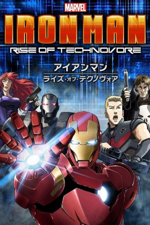

#10445 Iron Man: Rise of Technovore
 
 IMDB-Wertung: 5.3 / 10
IMDB-Wertung: 5.3 / 10  Metascore: 0
Metascore: 0 
Der Multimilliardär Tony Stark wehrt in seiner Iron-Man-Rüstung den Angriff eines mysteriösen neuen Gegners ab. Dabei sterben unschuldige Menschen, darunter sein bester Freund War Machine, Lt. Colonel James Rhodes. Als S.H.I.E.L.D. Iron Man verhören will, entkommt dieser, um den Drahtzieher des Anschlags zu entlarven. Von Black Widow und Hawkeye verfolgt...
Jahr: 2013
Dauer: 84 Minuten
FSK:
Land: Japan Studio: Sony Pictures Home EntertainmentTonspuren:
Untertitel:
Auflösung: SD (704x384) Größe: 697 MB
Genre: Action, Sci-Fi, Animation/Trick
Regisseur: Hiroshi Hamazaki
Drehbuch: Stan Lee, Don Heck, Larry Lieber, Jack Kirby, Brandon Auman
Soundtrack: Tetsuya Takahashi
Darsteller:
Datei: X:\Comic-Trick\Iron Man\Iron Man Rise of Technovore (2013, FSK, 704x384).avi seit 09.01.2019
Festplatte: Comicverfilmungen+MusikCD
 Alle Filme aus Gruppe 'Comic-Trick\Iron Man'
Alle Filme aus Gruppe 'Comic-Trick\Iron Man'